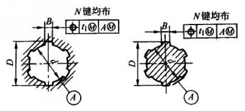
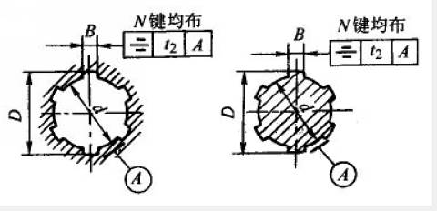

|  |  |
矩形花键的位置度、对称度公差(摘自GB/T 1144-2001) |
||||
键槽宽或键宽B |
3 |
3.5~6 |
7~10 |
12~18 |
t1 |
t1 |
t1 |
t1 |
|
键槽 |
0.01 |
0.015 |
0.02 |
0.025 |
键：滑动、固定 |
0.01 |
0.015 |
0.02 |
0.025 |
键：紧滑动 |
0.006 |
0.01 |
0.013 |
0.016 |
t2 |
t2 |
t2 |
t2 |
|
一般用 |
0.01 |
0.012 |
0.015 |
0.018 |
精密传动用 |
0.006 |
0.008 |
0.009 |
0.011 |
注：
1．花键的等分度公差值等于键宽的对称度公差。
2．本表的单位是mm。